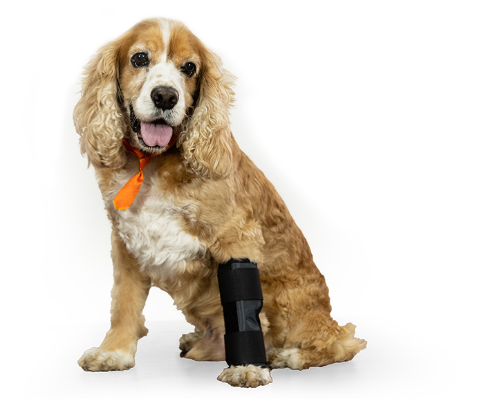
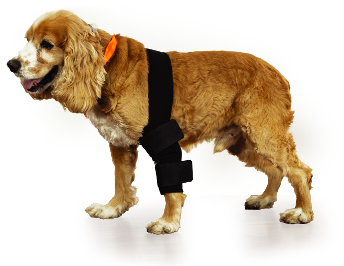
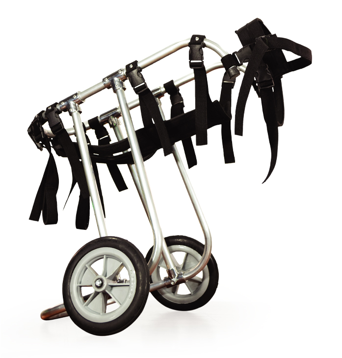
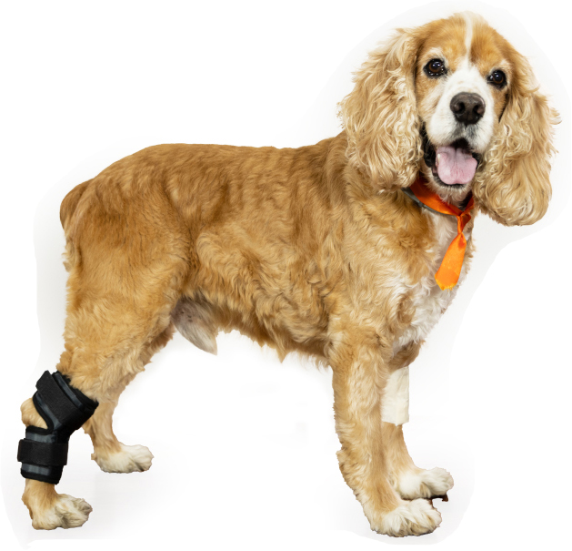
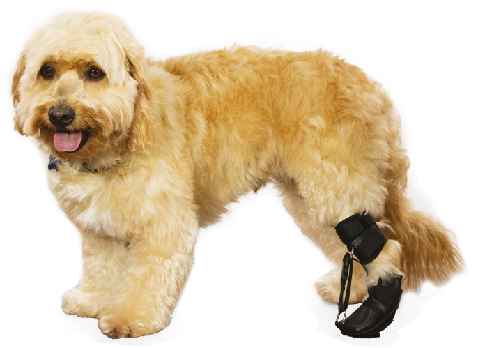

En la Ortopedia pueden también presentarse problemas de ligamentos, ruptura del ligamento cruzado de la rodilla, luxación de la patela y del hombro, procesos articulares degenerativos, displasias, entre otras. Se han incorporado nuevas técnicas para la resolución de patologías articulares, así como materiales más evolucionados para implantes y adaptados a las necesidades de cada paciente.
| Protector de Codo | Estabilizador de carpo y Tarzo | Silla de Ruedas | Protector de la Rodilla | Posicionador de Miembro Posterior |
|  |  |  |  |  |